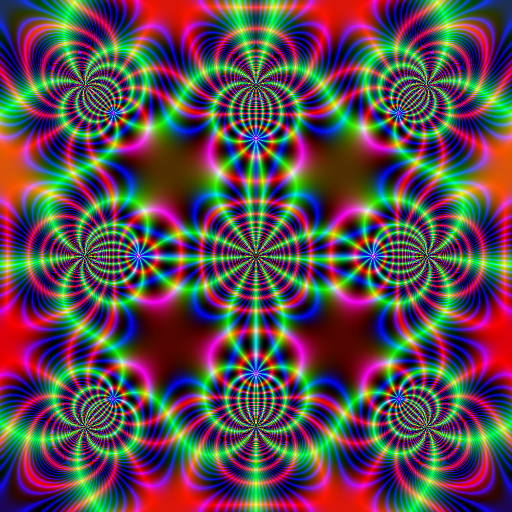
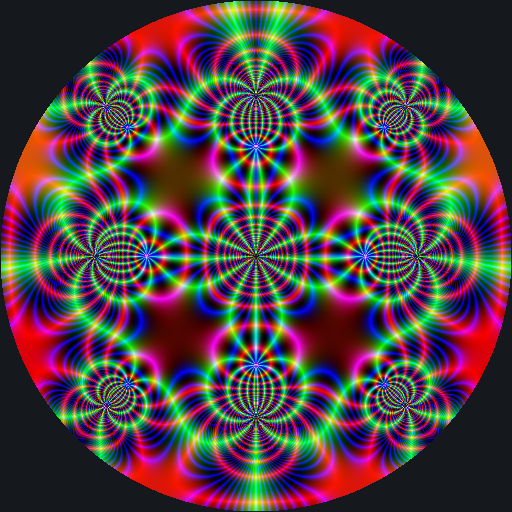

Mapping a square to a circle
Denoting by \(F(z \,|\, m)\) the incomplete elliptic function of first kind, the function \[ \varphi(z) = -\sqrt{i} \, F\bigl(i \sinh^{-1}(\sqrt{i} \, z) \,|\, -1 \bigr). \] is a conformal mapping from the square \([-1,1] \times [-1,1]\) to a centered circle. I learnt that here.
Then, if one has a square image, we can transform it to a circular image with the help of this function \(\varphi\). I will give an example.
One can use instead the function \(\psi(z) = \varphi(z)/\varphi(1)\) to get a conformal mapping from this square to the unit circle. I will use this one. And I will call this square the unit square.
First, let’s plot a beautiful complex function on a square. I take the Weierstrass zeta function.
library(jacobi) # to get the `wzeta` function
library(RcppColors) # to get the `colorMap1` function
# vectorize a Weierstrass zeta function
f <- Vectorize(function(x, y){
z <- complex(real = x, imaginary = y)
wzeta(w, omega = c(1/2, 1i/2))
})
# compute it on a 2-dimensional grid
x_ <- y_ <- seq(-1.5, 1.5, length.out = 512L)
ZETA <- outer(x_, y_, f)
# map this complex matrix to a matrix of colors
img <- colorMap1(ZETA)
# background color for the plot (only appears in R)
bkgcol <- rgb(21, 25, 30, maxColorValue = 255)
# plot
opar <- par(mar = c(0, 0, 0, 0), bg = bkgcol)
plot(c(-100, 100), c(-100, 100), type = "n", asp = 1,
xlab = NA, ylab = NA, axes = FALSE, xaxs = "i", yaxs = "i")
rasterImage(img, -100, -100, 100, 100)
par(opar)
I hope you like it. Now we will map this image to a circle.
We firstly compute the values of \(\psi\) on a grid of the unit square:
library(Carlson) # to get the `elliptic_F` function
# define the `psi` function
w <- sqrt(1i)
D <- elliptic_F(1i * asinh(w), -1)
psi <- function(x, y) { # maps the unit square to the unit circle
z <- complex(real = x, imaginary = y)
elliptic_F(1i * asinh(w * z), -1, minerror = 1e-10) / D
}
# compute this function on a grid of the unit square
n <- 512L
PSI <- matrix(NA_complex_, nrow = n, ncol = n)
for(i in 1L:n) {
x <- -1 + 2 * (i-1) / (n-1)
for(j in 1L:n) {
y <- -1 + 2 * (j-1) / (n-1)
PSI[i, j] <- psi(x, y)
}
}We will need to interpolate the values of the Weierstrass zeta function stored in the ZETA matrix. To do so, we introduce two functions, one to interpolate the real parts, the other one to interpolate the imaginary parts:
library(cooltools) # to get the `approxfun2` function
x_ <- y_ <- seq(-1, 1, length.out = n)
f_re <- approxfun2(x_, y_, Re(ZETA))
f_im <- approxfun2(x_, y_, Im(ZETA))Note that these two functions are defined on the unit square. And the cooltools package is indeed cool.
Now it’s easy. With the help of these two functions, we map the values of \(\psi\) that we stored in the PSI matrix:
M_re <- f_re(Re(PSI), Im(PSI))
M_im <- f_im(Re(PSI), Im(PSI))
ZETA_CIRCLE <- complex(real = M_re, imaginary = M_im)
dim(ZETA_CIRCLE) <- c(n, n)Now we transform this complex matrix to a matrix of colors, and we plot it:
# map the complex matrix to a matrix of colors
img <- colorMap1(ZETA_CIRCLE)
# plot
opar <- par(mar = c(0, 0, 0, 0), bg = bkgcol)
plot(c(-100, 100), c(-100, 100), type = "n", asp = 1,
xlab = NA, ylab = NA, axes = FALSE, xaxs = "i", yaxs = "i")
rasterImage(img, -100, -100, 100, 100)
par(opar)